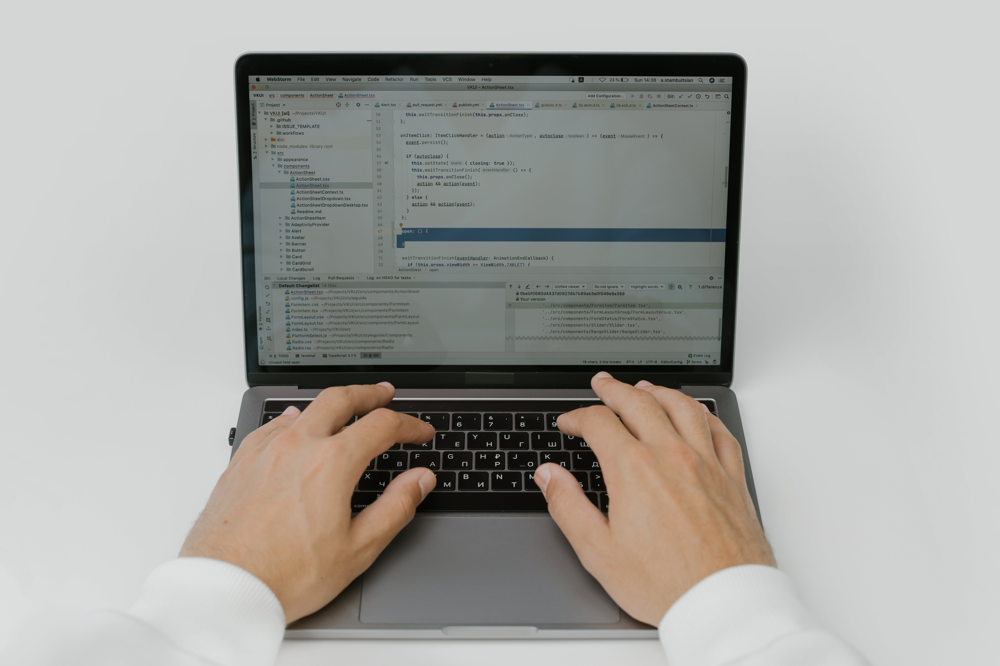
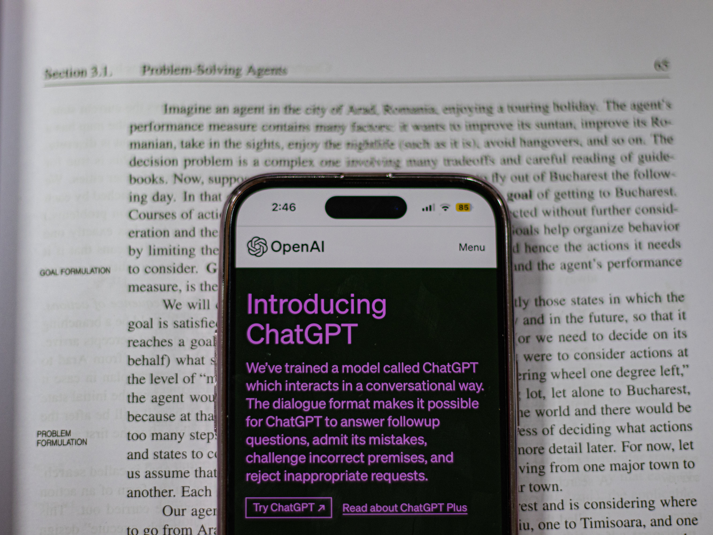
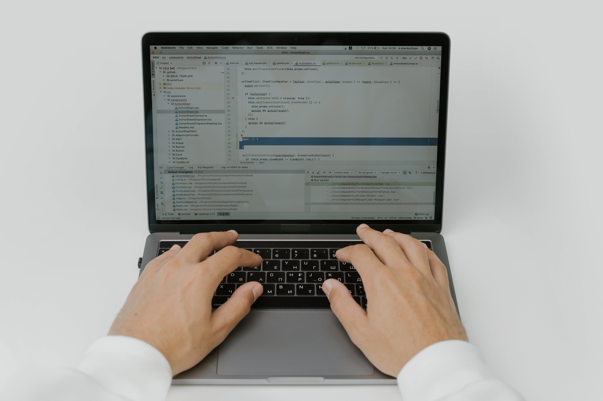
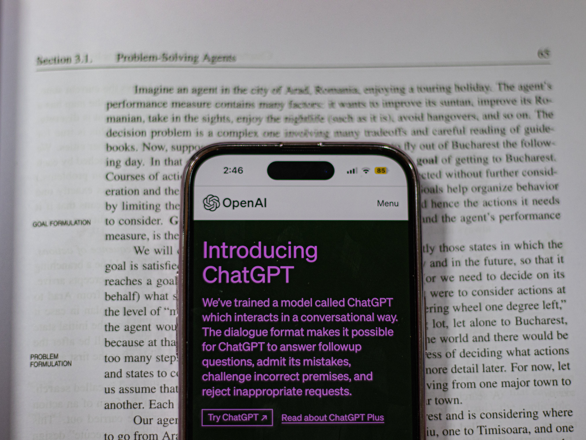

La licence professionnelle
La licence professionnelle est (comme son nom l'indique) une licence sur une à trois années d'études rythmée par les cours et les stages en entreprise. Elle propose différents parcours aux étudiants intéressés, peut s'effectuer en alternance et permet une insertion immédiate sur le marché du travail.
En 2019, 18 mois après l'obtention d'une licence professionnelle, le taux d'insertion dans le monde du travail est de 91% (contre 84% pour le DUT) atteignant 95% après 30 mois, contre 91% pour le DUT. (selon le ministère de l'enseignement supérieur et de la recherche)
Ainsi, la licence professionnelle facilite l'insertion professionnelle.
Toutefois, cela ne veut pas dire qu'il est impossible de continuer ses études. En effet, un.e diplômé.e d'une licence professionnelle peut tout à fait se diriger vers un master. Si tu veux en savoir plus sur les masters, je t'invite à consulter cette page de notre site.
 



Dans le BUT
Dans le cas du BUT¹, il est possible de réaliser deux années de formation au sein de l'IUT et de se diriger vers la licence professionnelle.
Cela veut dire que tu réalises ta première et deuxième année dans ton IUT afin de valider le DUT¹ puis tu peux faire une demande afin de d'effectuer une troisième année en licence professionnelle. Cette dernière peut proposer des spécialisations différentes de l'IUT.
1 an après l'obtention du DUT, environ 25% des étudiants s'incrivent en licence professionnelle. De plus, près de 95% des jeunes diplômé.e.s des deux années d'IUT réussissent en une seule fois leur parcours en licence professionnelle ! (session de 2019-2020, selon le ministère de l'enseignement supérieur et de la recherche)
¹ : Attention à ne pas confondre DUT et BUT. Le DUT, c'est-à-dire le Diplôme Universitaire Technologique, est le diplôme que tu obtiens après deux années de formation au sein de l'IUT soit un acquis de 120 crédits européens. En revanche, le Bachelor Universitaire Technologique (BUT), s'obtient après trois années d'études dans un IUT par l'acquis de 180 crédits. Par conséquent, l'un est un BAC+2 et l'autre un BAC+3.